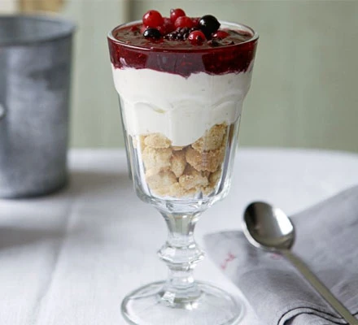

Easy Cheesecake

Cheesecake Lovers Unite!
This quick, make-ahead dessert is perfect when having a night in just the two of you
Ingredients
- 4 shortbread biscuits
- 300g tub soft cheese
- zest and juice of 1 lime
- 3 tbsp icing sugar
- ½ a 380g pack of frozen mixed berries, plus a few extra to serve
Method
- Put the shortbread biscuits into a plastic bag and bash with a rolling pin
until broken. Divide between two dessert glasses. Beat together the soft cheese
with the zest of a lime and 2 tbsp icing sugar until smooth. Put this on top of
each biscuit base and smooth out with the back of a spoon.
- Take the mixed frozen berries, defrost and blend half with 1 tbsp icing sugar
and the juice of the lime. Pour this on top of each cheesecake and scatter with
a few extra whole berries. Serve or sit in the fridge for a few hours before
serving.